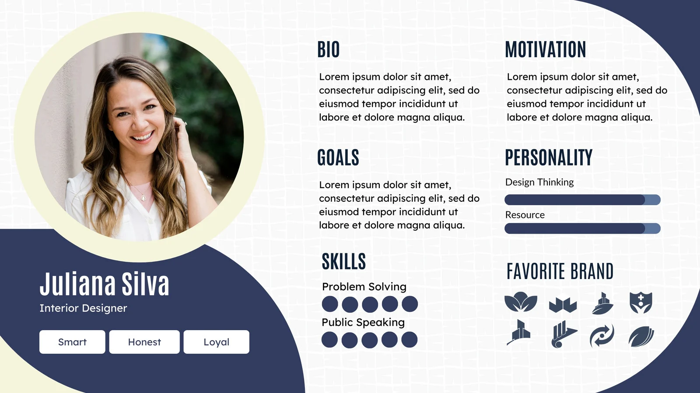

What is a User Persona? A semi-fictional profile of a typical user, built from research, that keeps the team designing for real goals, needs and frustrations rather than its own assumptions.
- Identified key user groups from research findings
- Created a persona that reflects motivations, needs, frustrations, and goals
- Practiced synthesising qualitative/quantitative data into a design piece
On this page
Context
Students have gathered discovery data (surveys, interviews, research goals, problem statement). Now they will translate insights into a humanised representation of their target users. Personas help teams empathise and keep design decisions grounded in user reality.
Goal / Learning Outcome
By the end of this activity you should have:
- Identified key user groups from research findings
- Created a persona that reflects motivations, needs, frustrations, and goals
- Practiced synthesising qualitative/quantitative data into a design piece
Main Exercise
- Cluster Insights
- Review past interview/survey notes and problem statements.
- Group user behaviours, goals, and pain points into clusters
- Define Archetypes
- Identify 1–2 primary user types emerging from clusters.
- Give them working labels (e.g., “The Busy Parent,” “The Tech Skeptic”).
- Build the Persona
- For each archetype, fill out a Persona Template with:
- Name, age, background
- Motivations & goals
- Pain points & frustrations
- Behaviours & tools they use
- A quote that captures their perspective
- For each archetype, fill out a Persona Template with:
- Present Back
- Each team shares their persona with the class.
Extra Notes
- Stress that personas are not stereotypes but evidence-based composites.
- Encourage diversity of perspective, but ensure personas remain tied to research data (not guesses).
Template

In the above template example, we have:
- Profile Photo (portrait of the persona)
- Name: Juliana Silva
- Job Title: Interior Designer
- Traits / Values: Smart, Honest, Loyal
- Age
- Generation
Sections:
- Quote – Loosely summarises the current user state of mind
- Goals – What they are looking to achieve (inside problem space)
- Pain Points - Where are they suffering as a result of the issue we are currently talking about
- Personality (with progress bars)
- Design Thinking
- Resource
- Favorite Brand (set of brand-like icons shown visually)
- Technology usage - Instagram or Tik Tok, iOS or Andriod
Tips
- Give your persona a name and photo to make them feel real.
- Use direct quotes from interviews wherever possible.
- Keep it concise — it should be quick for others to grasp.
AI Assist
Students can use AI to:
- Summarise interview/survey data into bullet points
- Suggest persona names, demographics, or phrasing for goals/pain points
- Generate stock-style persona photos (with caution not to stereotype)
Media
Resources
- User Persona Guide (Nielsen Norman Group)
- User Persona Examples
- Miro / MURAL persona templates (if digital)
Checklist
☐ Reviewed discovery research
☐ Grouped insights into clusters
☐ Identified 1–2 archetypes
☐ Completed persona template
☐ Presented to peers
Summary
Students synthesise research insights into clear, relatable personas. These personas will guide upcoming design decisions, ensuring the product aligns with real user needs.